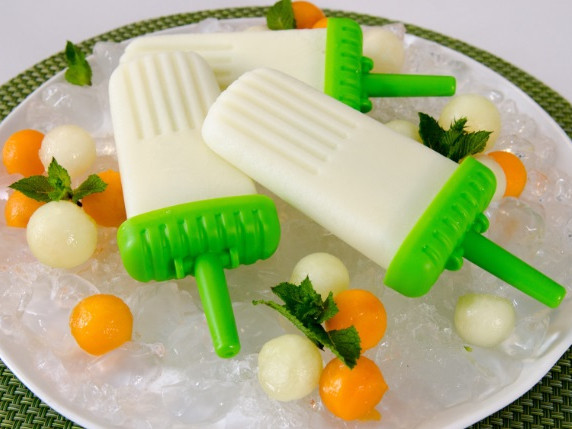

Melon Ice Pops

Description
This mouth-watering recipe is ready in just 15 minutes and the ingredients detailed below can serve up to 6 people.
Ingredients
- 60ml heavy cream
- 1 tablespoon honey
Steps
- Pour the cream into a saucepan and add the honey. Place the saucepan over medium-high heat and bring to a boil.
- Lower the heat to medium-low to low and stir with a wooden spoon for about 3 minutes.
- Keep stirring to ensure the honey is dissolved and the cream does not burn. Turn off the heat, set it aside and allow to cool for about 5 minutes